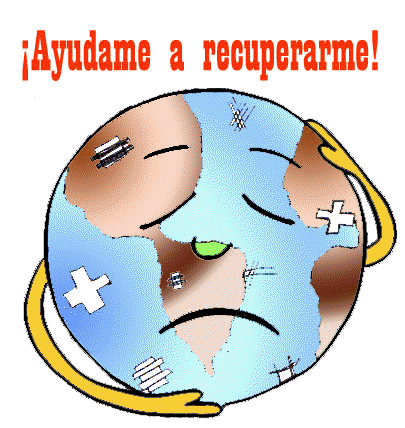

Cada día las actividades humanas están produciendo una degradación en el medio ambiente y los recursos naturales que son necesarios para la vida, por lo cual resulta imprescindible enseñar a la población a cuidar su entorno
Ahora te invito a identificar los principales problemas del medio ambiente con el juego de la Memoria